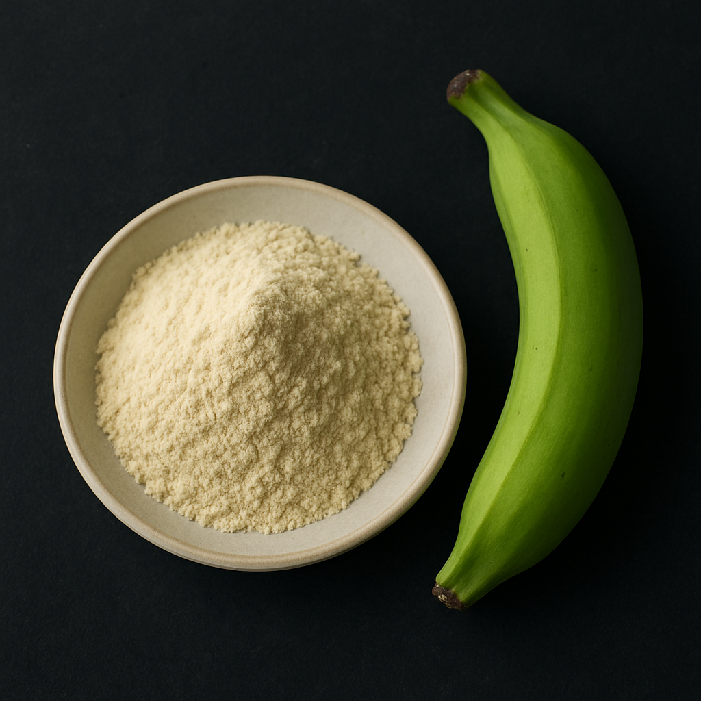

Raw Green Banana Powder
Naturally sun-dried, budget-friendly banana powder with gut health benefits.
Drying Method: Sun/Air Drying
Color: White/Cream
Shelf Life: 12 - 15 Months
MOQ: 1000 kg
- Economical production method
- Ideal for Indian and African markets